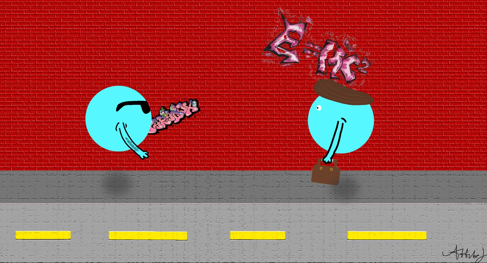

Neutrinos are—in my opinion—the weirdest particles in the universe. They can travel through everything without interacting with anything. But how? How can these particles pass through matter?
Picture (or at least try to) 100 trillion particles flowing through your body every second of your life. More neutrinos are flying through your body right now than there are stars in the Milky Way galaxy and living things on Earth combined. And yet, we never feel a thing.

Unlike your chemistry teacher's favorite particle, electrons and protons, neutrinos don't have an electric charge!! Electrons have a negative charge, and protons have a positive charge. This difference in charge causes them to be attracted to each other. If like charges meet, they repel; if opposite charges meet, they attract; that's the electric force in action. Since neutrinos lack charge, they aren't attracted to other subatomic particles, meaning they can whisk past them without feeling any force. Neutrons are also missing a color charge, which is the fundamental property that affects their strong nuclear force interaction—the force that holds the nucleus of atoms together. The absence of these two properties makes them the ghosts of the quantum physical world.
But where do all these neutrinos come from?
Neutrinos are byproducts of almost every nuclear reaction and radioactive decay process in the cosmos. This is relevant to the Sun because it's literally a giant nuclear fusion reactor, pumping out 384.6 septillion watts of energy every second. This energy comes from nuclear reactions at its core. That amount of energy is so large your brain can't even comprehend it. So large, in fact, that it creates 1.72 duodecillion (172,000,000,000,000,000,000,000,000,000,000,000,000) neutrinos every second. Don't even try with that number. And that's only from one star, by the way. There are around 200 billion stars in the galaxy, each producing that many neutrinos every second 🤯.
Stars are only one example of neutrino factories. Supernovae, cosmic rays, and the Big Bang all create (or created) neutrinos. The universe is one big soup full of these particles with nowhere to go, because wherever they go, they literally do nothing.
There you have it, a blog about the seemingly most meaningless particle in the universe. Quantum mechanics would tell you otherwise, but don't listen to it. No one fully understands it anyway.